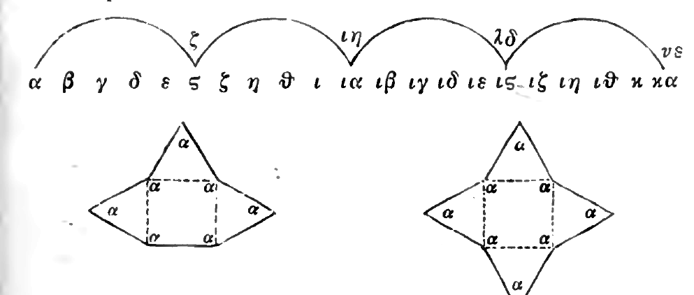

Chapter 11: Hexagonal, Heptagonal, and Higher Polygonal Numbers — Greek (Hoche 1866)¶
Ἀριθμητικὴ Εἰσαγωγή, Book II, Ch. 11 (ed. R. Hoche, Teubner, 1866)
ια. Ἑξάγωνοι δὲ καὶ ἑπτάγωνοι καὶ οἱ ἑξῆς κατὰ τὴν αὐτὴν ἔφοδον προβιβασθήσονται ἀπὸ τοῦ φυσικοῦ χύματος τοῦ ἀριθμοῦ στοιχηδὸν ἐκτεθέντος αἰεὶ κατὰ μονάδος πρόςθεσιν τῶν ἀποστάσεων γινομένων· ὡς γὰρ ὁ μὲν τρίγωνος τοὺς μονάδι διαφέροντας, μηδὲν παραλείποντας εἰς τὴν σωρείαν δεχόμενος ἀπετελεῖτο, ὁ δὲ τετράγωνος τοὺς δυάδι μὲν διαφέροντας, ἕνα δὲ παραλείποντας, πεντάγωνος δὲ ἀκολούθως τοὺς τριάδι μὲν διαφέροντας, δύο δὲ παραλείποντας, οὓς καὶ ἀπεδείξαμεν ὑποδείγματα αὐτῶν τε καὶ τῶν ἀποτελουμένων ἐκθέμενοι ἐξ αὐτῶν, οὕτως καὶ ἑξάγωνοι γνώμονας ἕξουσι τοὺς τετράδι μὲν διαφέροντας, τρεῖς δὲ παραλείποντας, ἐξ ὧν συντεθέντων σωρηδὸν ἀποτελοῦνται, οἷον α, ε, θ, ιγ, ιζ, κα καὶ ἐφεξῆς, ἵνα οἱ ἀποτελούμενοι ἑξάγωνοι ὦσιν α, ϛ, ιε, κη, με, ξϛ καὶ ἀεί, μέχρις ἄν τις θέλῃ. οἱ δὲ τούτοις ἀκόλουθοι ἑπτάγωνοι τοὺς μὲν γνώμονας ἔχουσι πεντάδι μὲν διαφέροντας, τετράδι δὲ διαλείποντας, οἷον α, ϛ, ια, ιϛ, κα, κϛ, λα, λϛ καὶ ἐφʼ ὁσονοῦν, αὐτοὶ δὲ οἱ συνιστάμενοί εἰσιν
f. 0113 · p. 95

α, ζ, ιη, λδ, νε, πα, ριβ, ρμη καὶ τοῦτο μέχρι παντός. ὀκτάγωνοι δὲ κατὰ τὴν αὐτὴν τάξιν τοῖς τε γνώμοσιν ἑξάδι διαφέροντες προκόπτουσι καὶ τοῖς συστήμασιν ἀναλόγως. ἵνα δὲ ἐπὶ πάντων παρατηροῦντι τοῦτο καθολικὸν σύμφωνον ᾖ, ἑκάστου πολυγώνου τοὺς γνώμονας διαφέρειν ἀλλήλων δυάδι ἐλαττόνως, ἢ κατὰ τὴν ἐν τῷ ὀνόματι ποσότητα τῶν γωνιῶν, τουτέστι μονάδι μὲν τὸν τρίγωνον, δυάδι δὲ τὸν τετράγωνον, τριάδι δὲ τὸν πεντάγωνον, τετράδι δὲ τὸν ἑξάγωνον καὶ πεντάδι τὸν ἑπτάγωνον καὶ ἀεὶ κατὰ παραύξησιν οὕτως.